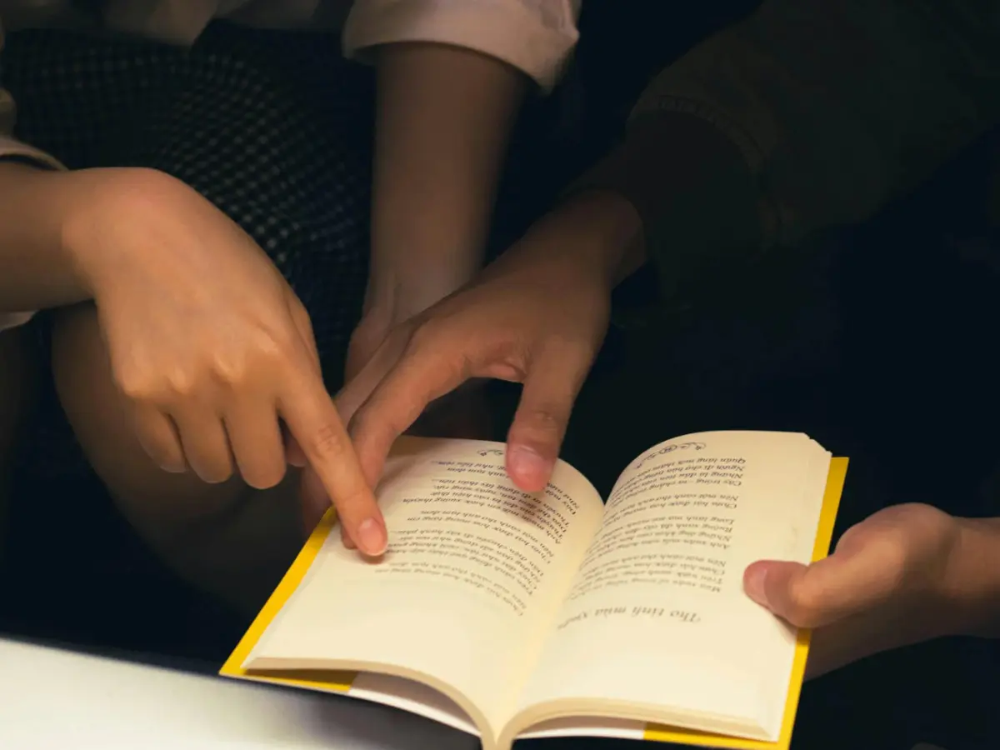
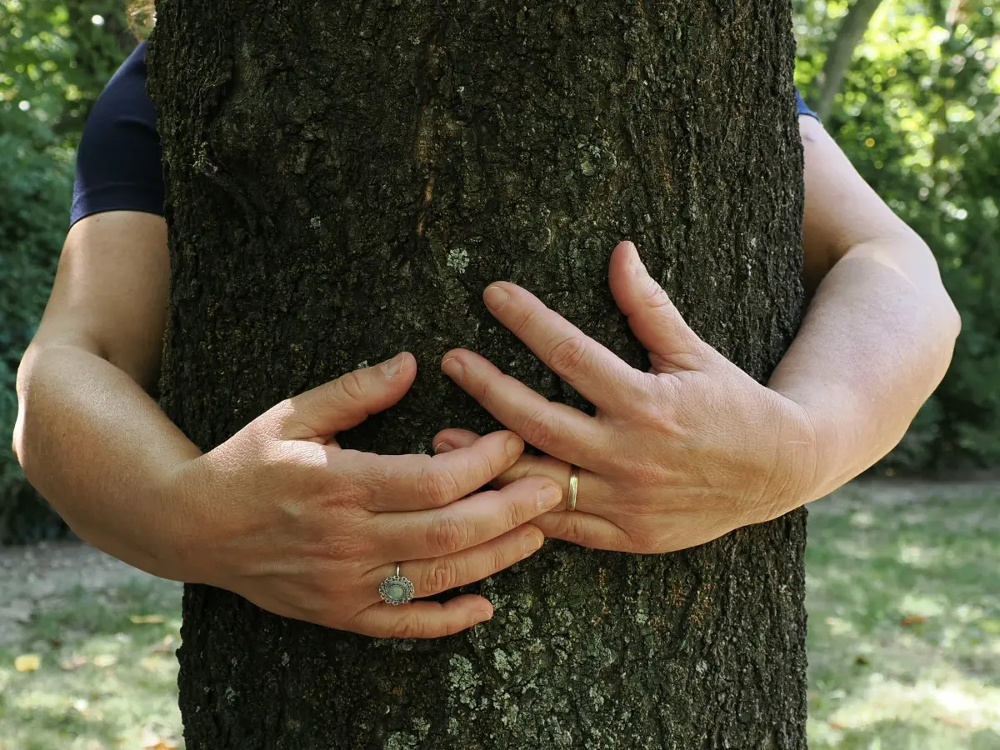
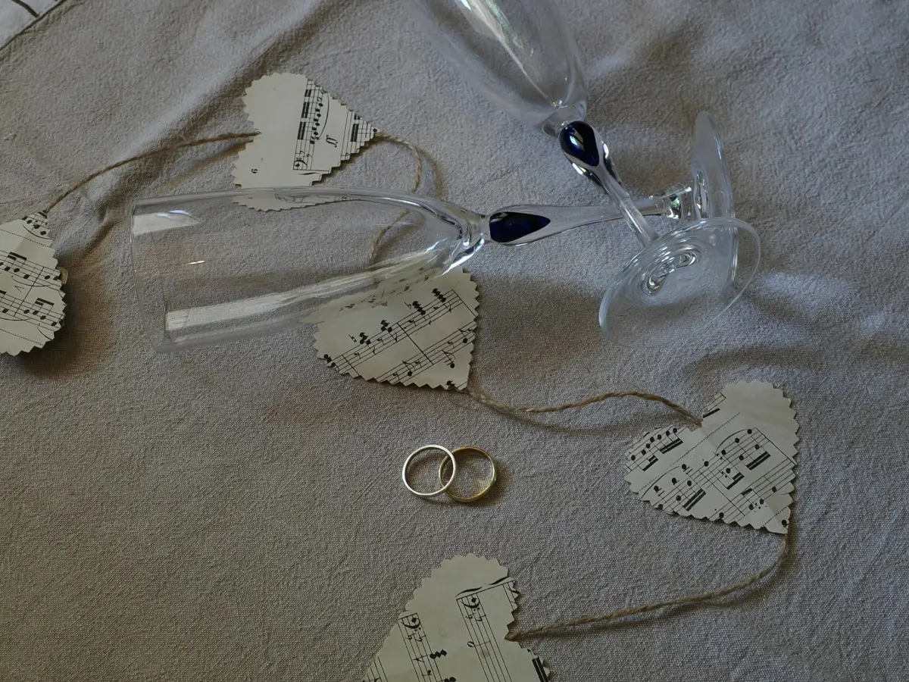
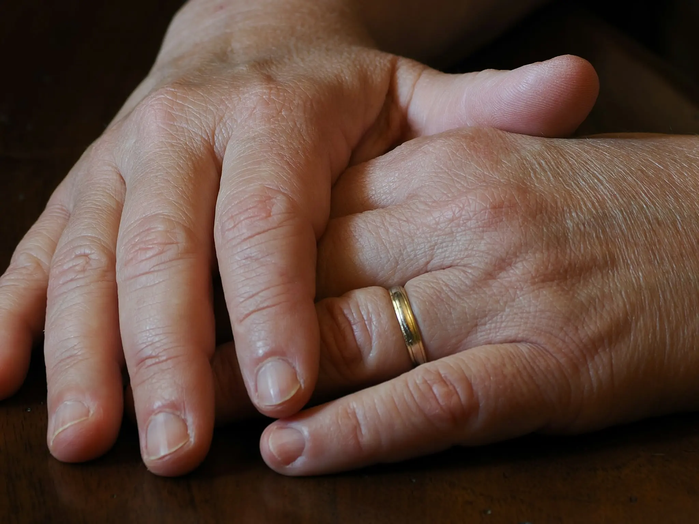
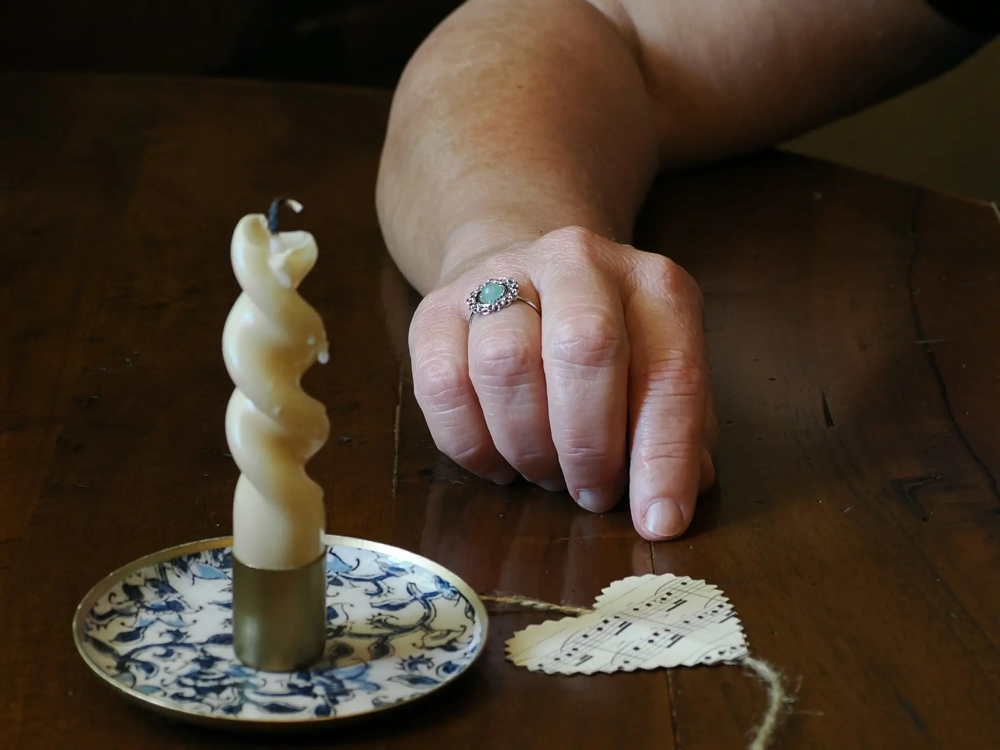
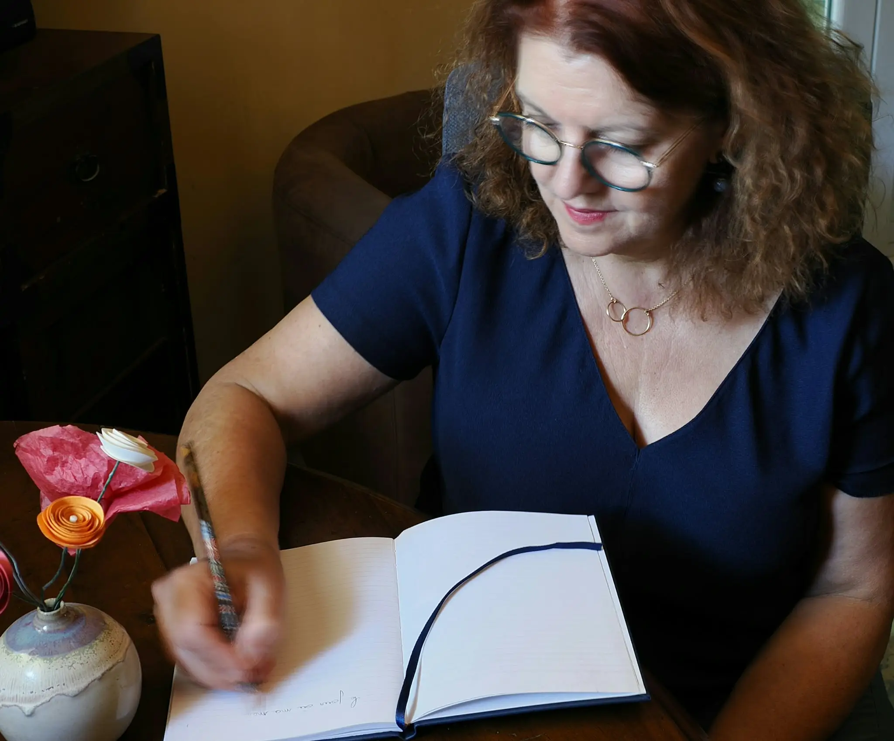
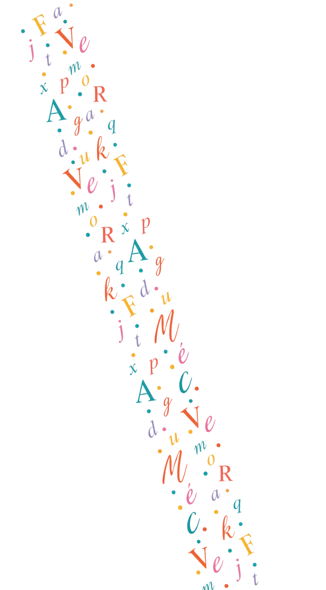

Quelle biographie pour moi ?
Il n'y a pas de petite ou grande histoire, toute histoire ou expérience en vaut la peine.
La vôtre est forcément digne d'être écrite, puisque c'est la vôtre.
Pour raconter sa vie
Vous avez envie de raconter l’histoire de votre vie, votre parcours, vos rencontres. Vous voulez faire le lien entre les générations, transmettre les origines de la famille, laisser des traces du passé, ou tout simplement envie de rassembler vos souvenirs dans un bel ouvrage qui se transmettra.
Vous êtes le narrateur de votre vie.Pour raconter sa maladie
Vous ressentez le besoin de témoigner de la traversée d’une maladie ou d’un combat pour recouvrer la santé. La biographie hospitalière permet de nommer un vécu traumatisant, d’être entendu. Vos mots sont recueillis pour être partagés ou simplement pour les retrouver plus tard et ainsi alléger les épreuves vécues.
Les rencontres peuvent se faire sur le lieu de l’hospitalisation.
Après un AVC, dans certaines pathologies dégénératives ou dans le cadre de troubles sévères de la voix, le récit oral est entravé, mais l’envie de raconter persiste. La compréhension n’est pas toujours aisée pour les proches, c’est pourquoi mon expérience orthophonique est déterminante pour recueillir et transmettre le récit entravé.Pour raconter un événement
Partager une expérience précise : un voyage, une rencontre, une période de votre vie, une reconversion, un projet professionnel, une naissance. Pour ne pas oublier ou pour témoigner, ce format plus court permet de conserver et de partager le récit de cet évènement.
Vous l’avez vécu ? Racontez- le.
À l’occasion d’évènements festifs : mariage, anniversaire, départ en retraite, je recueille sur place les anecdotes, les témoignages, des personnes invitées, afin de réaliser un bel album de souvenirs écrits, illustrés, qui complètera le traditionnel album de photos.Pour raconter son savoir-faire
Vous avez envie de conserver des savoir-faire : recettes de cuisine, constructions, fabrications artisanales... issues de votre propre savoir ou celui d’autres personnes. Le recueil se construit autour des pratiques concrètes et leurs contextes, leurs origines et les anecdotes qui s’y rapportent, dans un ouvrage pédagogique, avec votre histoire en toile de fond.
Vous avez du talent, transmettez-le !Pour raconter son entreprise, son collectif
Les entreprises aussi ont leur histoire, elle mérite d’être racontée : ses origines, sa construction, son évolution… Le récit permet de souder une équipe, de renforcer les liens d’appartenance, de se souvenir. Le livre d’entreprise devient un bel outil à présenter aux partenaires ou aux clients, afin d’affirmer son identité et les caractéristiques qui l’ont façonnée.
L’histoire collective est puissante et mérite d’être écrite.
Vous avez fondé un projet collectif, une histoire de quartier, une réalisation à plusieurs, racontez le pour témoigner, pour se souvenir et pour valider que l’union fait la force.Pour se raconter soi
Déposer son histoire, être écouté et entendu, pouvoir se relire permet de mettre de la distance avec la réalité. cette histoire qui est la vôtre, vous la regardez et elle prend une autre dimension, une autre place. Elle existe en dehors de vous, permettant de vous alléger d’un poids. Ce recueil est avant tout pour le narrateur qui souhaite faire un chemin personnel.
Le chemin vous révèle, gardez-en la tracePour raconter un proche défunt
Lorsqu’on se déplace dans un cimetière, on a parfois envie d’en savoir un peu plus sur les personnes disparues. Grâce à un QR code déposé sur la pierre tombale, je propose au visiteur, comme à la famille, de connaitre un peu de l’histoire de cette personne, afin d’aller à sa rencontre, pour ne pas oublier, pour relier les générations entre elles. Ce projet s’élabore avec la famille du défunt. Il peut se décliner par écrit ou par audio.
Les mots gardent les souvenirs en vie.





Comment s'y prend-on ?

La réalisation d'une biographie est une vraie création en duo, dans la rencontre de deux personnes vers un projet commun, pour aboutir à un résultat qui rendra fier le narrateur.
Lors d’une séance, j’enregistre votre parole afin d’être libérée de la notation et être à l’écoute dans le moment présent.
Vient ensuite le temps de l’écriture. Il ne s’agit pas seulement de retranscrire mot pour mot, une IA le ferait fort bien, mais de rédiger votre parole en la sublimant ! Mettre pleins feux sur certains moments, adoucir d’autres, rendre sensible un évènement ou le traduire avec froideur. Mettre votre histoire en scène, avec sensibilité, dans le respect de vos mots et de vos choix.
Vous êtes le scénariste, je suis la metteuse en scène.
Je vous soumets le résultat afin d’en discuter et poursuivre selon votre choix. Vous savez toujours où vous en êtes et vous êtes pilote de votre récit.
Le projet se définit lors de notre première rencontre, de façon précise, en signant un contrat qui garantit à chacun le bon déroulé de la biographie.
Je propose des prestations sur mesure :
- Récit court avec un seul entretien
- Récit d'une vie sur plusieurs entretiens
- Récit de groupe adapté
Les rencontres peuvent se dérouler à votre domicile, dans mon bureau, sur votre lieu de vie ou d'hospitalisation et en visioconférence.

Écrire une biographie, c’est aussi créer d’un bel ouvrage à transmettre, à partager et à s’offrir.
Je m’entoure de partenaires qui pourront, à la demande, parfaire le rendu graphique, réaliser des photos, apporter de l’infographie et sublimer l’ouvrage final.
Tarifs
Soucieuse de démocratiser l’accès à la biographie et de permettre à tous d’écrire son histoire, je propose des tarifs et des formules au plus près des possibilités de chacun, tout en m’ajustant aux tarifs préconisés par la profession.
Tarifs *
Récits courts
(1 entretien, ±6h de rédaction, rendu final)
Récit long
Projet collectif, évènement, adapté
Frais additionnels :
Forfait kilométrique
(<20km de Carpentras)
Forfait kilométrique
(>20km de Carpentras)
Temps de recherches complémentaires
300€
250€ par entretien
à définir au court du premier entretien
gratuit
0,50€ /km
20€ /heure
* Le prix de l'édition, dépendant des éventuels partenaires et de vos choix, n'est pas inclut dans les tarifs indiqués.
Modalités de paiement, conditions d'annulation et autres précisions : consultez nos Conditions générales de vente.
Le premier échange se fait en distanciel, par téléphone ou en visioconférence.
Il n’engage en rien.
La première rencontre en présentiel est gratuite : elle permet de s’engager et définir ensemble le projet afin d’établir un contrat précis et sécurisant.
L’élaboration du livre final (impression, édition, illustration, insert de photos, ...) se définit avec le narrateur lors du contrat.
Vous pouvez gérer cette partie ou me la confier ; je rechercherai, pour vous, une solution sur mesure.